Many manipulation decisions depend jointly on what a robot has seen, the actions it has executed, and how its proprioceptive state has evolved. Latent memory offers a natural way to automatically compress this growing multimodal history into a bounded representation, avoiding pre-defined memory representations of keyframes or textual summaries. Existing latent-memory methods, however, either focus primarily on visual history or receive only indirect supervision from action prediction, providing little guidance about what information should survive compression.
We introduce IMPRINT, a policy-agnostic latent memory framework that addresses both memory encoding and learning: it compresses growing multimodal histories within and across streams into a latent representation, then bootstraps the memory for preserving complete multimodal histories and tracking task-aware progress before joint adaptation for control. Across simulation benchmarks containing both memory-dependent and memory-free tasks and three real-world manipulation tasks, IMPRINT improves success over the base policy by 47.4% in simulation and 50% in the real world. Its recurrent encoding adds only 19.6 ms per action chunk while achieving higher success and lower latency than all evaluated memory baselines.
Per-task and average success on the nine memory-dependent tasks in RMBench.
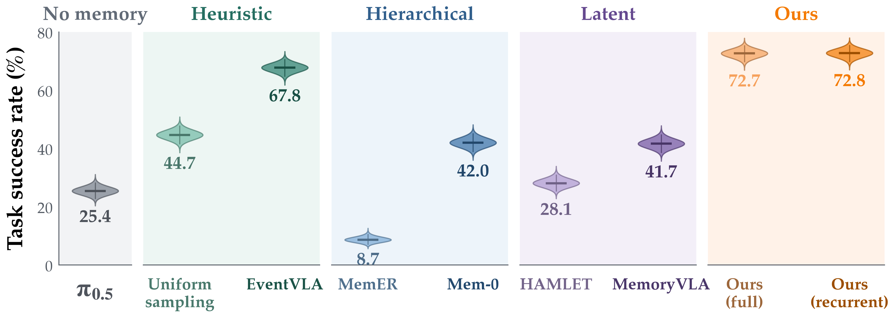
| Method | Obs. / Pick | Rearrange | Put Back | Swap Blocks | Swap T | Battery | Ranking | Cover | Press | Average |
|---|---|---|---|---|---|---|---|---|---|---|
| π0.5 | 8 | 63 | 20 | 16 | 8 | 30 | 65.6 | 15 | 3 | 25.4 |
| Uniform sampling | 5 | 79 | 100 | 62 | 30 | 28 | 82 | 13 | 3 | 44.7 |
| EventVLA | 21 | 96 | 95 | 96 | 87 | 35 | 81 | 97 | 3 | 67.8 |
| MemER | 7 | 17 | 0 | 14 | 7 | 27 | 0 | 6 | 0 | 8.7 |
| Mem-0 | 4 | 89 | 90 | 67 | 14 | 28 | 18 | 68 | 0 | 42.0 |
| HAMLET | 6 | 76 | 23 | 25 | 13 | 26 | 70 | 14 | 0 | 28.1 |
| MemoryVLA | 2 | 53 | 81 | 76 | 9 | 33 | 53 | 69 | 0 | 41.7 |
| Ours (full) | 9 | 100 | 100 | 100 | 100 | 41 | 83 | 100 | 21 | 72.7 |
| Ours (recurrent) | 6 | 99 | 100 | 100 | 100 | 35 | 84 | 100 | 31 | 72.8 |
Average success on memory-dependent and memory-free task groups in RoboCasa.
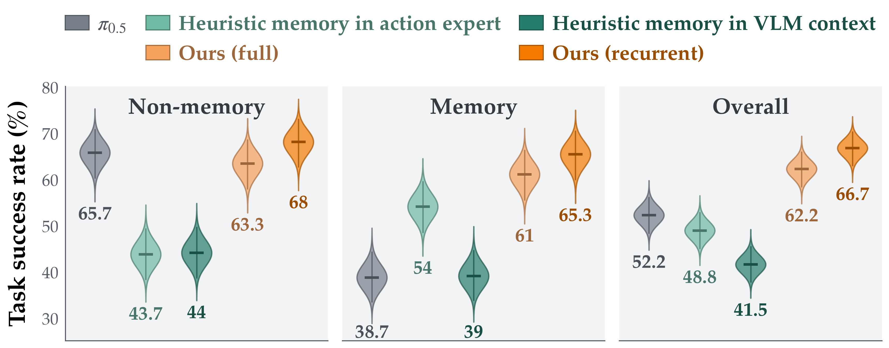
| Task | Type | π0.5 | Heuristic action expert | Heuristic VLM context | Ours (full) | Ours (recurrent) |
|---|---|---|---|---|---|---|
| Retrieve fruit | Memory | 42 | 88 | 60 | 84 | 90 |
| Retrieve oil | Memory | 48 | 98 | 50 | 76 | 80 |
| Wash and return left/right | Memory | 46 | 58 | 46 | 86 | 96 |
| Wash and return same location | Memory | 46 | 36 | 44 | 62 | 58 |
| Rinse cutting board | Memory | 4 | 8 | 0 | 0 | 4 |
| Sweeten hot chocolate | Memory | 46 | 36 | 34 | 58 | 64 |
| Pan transfer | Non-memory | 74 | 48 | 44 | 76 | 72 |
| Frying pan adjustment | Non-memory | 76 | 52 | 22 | 72 | 70 |
| Organize condiments | Non-memory | 72 | 32 | 48 | 62 | 74 |
| Place equal ice cubes | Non-memory | 16 | 6 | 6 | 6 | 20 |
| Scrub cutting board | Non-memory | 60 | 50 | 56 | 66 | 76 |
| Move from counter to sink | Non-memory | 96 | 74 | 88 | 98 | 96 |
The three real-world tasks are shown separately to preserve the scale and labels of the paper plots.
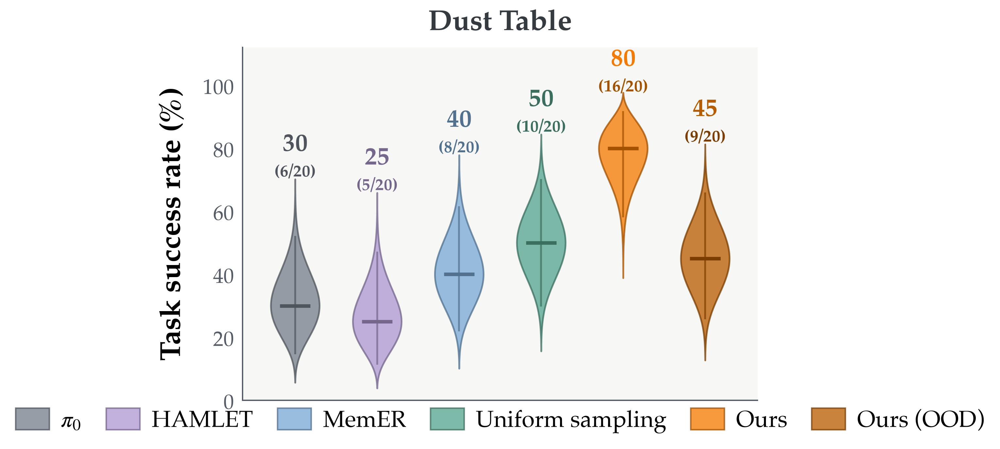
| Method | Success (%) | Successes / trials |
|---|---|---|
| π0 | 30 | 6 / 20 |
| HAMLET | 25 | 5 / 20 |
| MemER | 40 | 8 / 20 |
| Uniform sampling | 50 | 10 / 20 |
| Ours | 80 | 16 / 20 |
| Ours (OOD) | 45 | 9 / 20 |
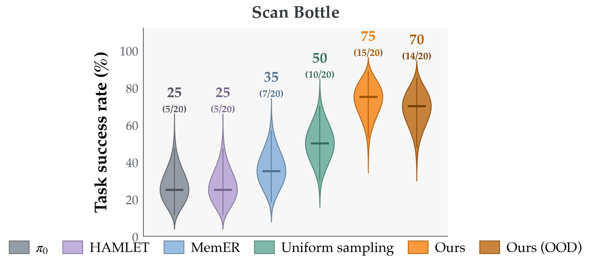
| Method | Success (%) | Successes / trials |
|---|---|---|
| π0 | 25 | 5 / 20 |
| HAMLET | 25 | 5 / 20 |
| MemER | 35 | 7 / 20 |
| Uniform sampling | 50 | 10 / 20 |
| Ours | 75 | 15 / 20 |
| Ours (OOD) | 70 | 14 / 20 |
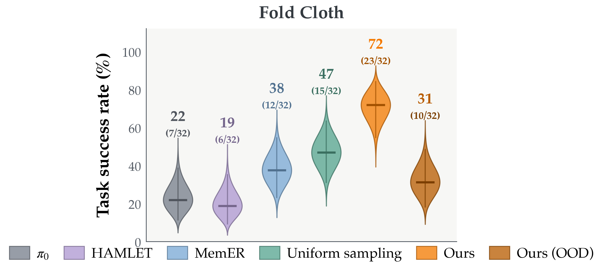
| Method | Success (%) | Successes / trials |
|---|---|---|
| π0 | 22 | 7 / 32 |
| HAMLET | 19 | 6 / 32 |
| MemER | 38 | 12 / 32 |
| Uniform sampling | 47 | 15 / 32 |
| Ours | 72 | 23 / 32 |
| Ours (OOD) | 31 | 10 / 32 |
Average RMBench success versus inference latency per action chunk.
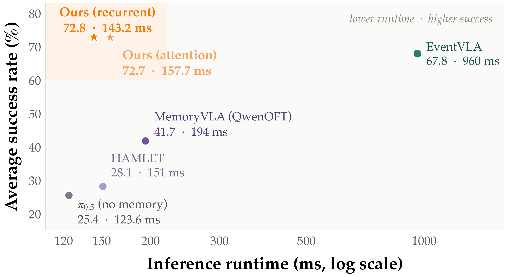
| Method | Success (%) | Runtime (ms) |
|---|---|---|
| π0.5 (no memory) | 25.4 | 123.6 |
| HAMLET | 28.1 | 151.0 |
| MemoryVLA (QwenOFT) | 41.7 | 194.0 |
| EventVLA | 67.8 | 960.0 |
| Ours (full) | 72.7 | 157.7 |
| Ours (recurrent) | 72.8 | 143.2 |
Memory bottleneck capacity and full-attention versus recurrent encoding.
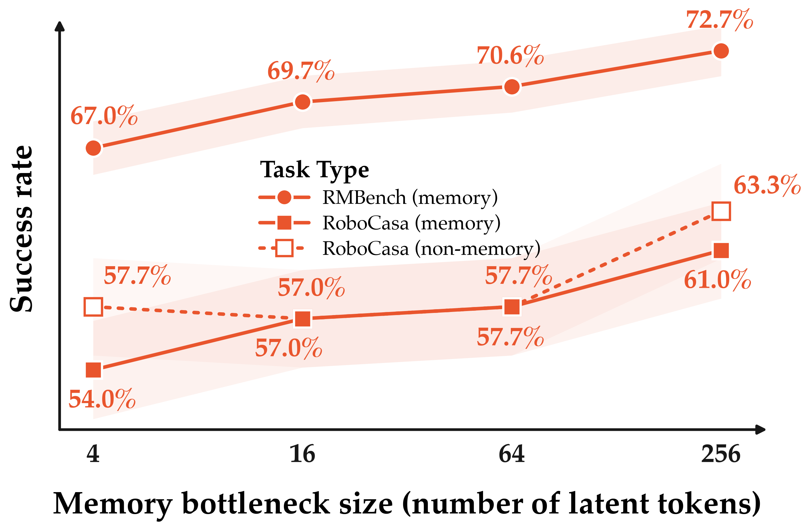
| Task | Benchmark | Type | 4 tokens | 16 tokens | 64 tokens | 256 tokens |
|---|---|---|---|---|---|---|
| Obs. / Pick | RMBench | Memory | 8 | 8 | 8 | 9 |
| Rearrange | RMBench | Memory | 100 | 100 | 100 | 100 |
| Put Back | RMBench | Memory | 100 | 100 | 100 | 100 |
| Swap Blocks | RMBench | Memory | 97 | 99 | 99 | 100 |
| Swap T | RMBench | Memory | 99 | 99 | 99 | 100 |
| Battery | RMBench | Memory | 40 | 44 | 39 | 41 |
| Ranking | RMBench | Memory | 73 | 79 | 81 | 83 |
| Cover | RMBench | Memory | 68 | 83 | 83 | 100 |
| Press | RMBench | Memory | 18 | 15 | 26 | 21 |
| Retrieve fruit | RoboCasa | Memory | 80 | 74 | 80 | 84 |
| Retrieve oil | RoboCasa | Memory | 66 | 78 | 70 | 76 |
| Wash and return left/right | RoboCasa | Memory | 92 | 84 | 82 | 86 |
| Wash and return same location | RoboCasa | Memory | 46 | 62 | 60 | 62 |
| Rinse cutting board | RoboCasa | Memory | 0 | 0 | 0 | 0 |
| Sweeten hot chocolate | RoboCasa | Memory | 40 | 44 | 54 | 58 |
| Pan transfer | RoboCasa | Non-memory | 78 | 68 | 70 | 76 |
| Frying pan adjustment | RoboCasa | Non-memory | 58 | 58 | 58 | 72 |
| Organize condiments | RoboCasa | Non-memory | 48 | 52 | 60 | 62 |
| Place equal ice cubes | RoboCasa | Non-memory | 4 | 10 | 6 | 6 |
| Scrub cutting board | RoboCasa | Non-memory | 60 | 60 | 56 | 66 |
| Pick/place counter to sink | RoboCasa | Non-memory | 98 | 94 | 96 | 98 |
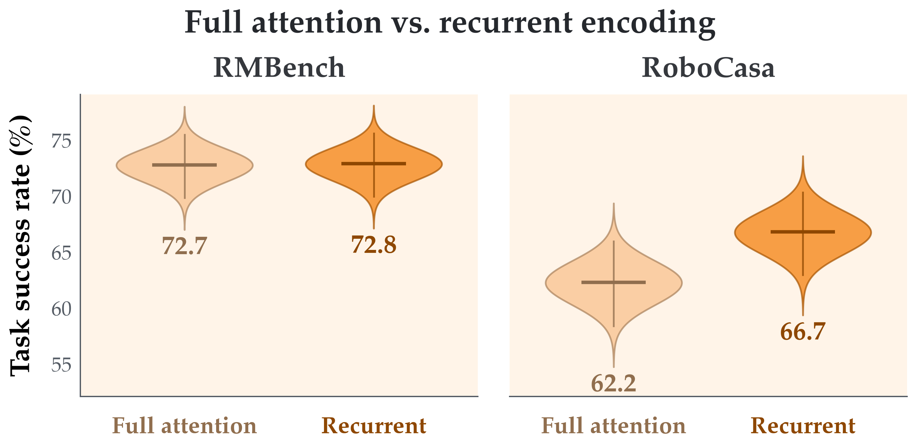
| Task | Benchmark | Full attention | Recurrent |
|---|---|---|---|
| Obs. / Pick | RMBench | 9 | 6 |
| Rearrange | RMBench | 100 | 99 |
| Put Back | RMBench | 100 | 100 |
| Swap Blocks | RMBench | 100 | 100 |
| Swap T | RMBench | 100 | 100 |
| Battery | RMBench | 41 | 35 |
| Ranking | RMBench | 83 | 84 |
| Cover | RMBench | 100 | 100 |
| Press | RMBench | 21 | 31 |
| Retrieve fruit | RoboCasa | 84 | 90 |
| Retrieve oil | RoboCasa | 76 | 80 |
| Wash and return left/right | RoboCasa | 86 | 96 |
| Wash and return same location | RoboCasa | 62 | 58 |
| Rinse cutting board | RoboCasa | 0 | 4 |
| Sweeten hot chocolate | RoboCasa | 58 | 64 |
| Pan transfer | RoboCasa | 76 | 72 |
| Frying pan adjustment | RoboCasa | 72 | 70 |
| Organize condiments | RoboCasa | 62 | 74 |
| Place equal ice cubes | RoboCasa | 6 | 20 |
| Scrub cutting board | RoboCasa | 66 | 76 |
| Move from counter to sink | RoboCasa | 98 | 96 |
Cover Blocks analysis using the unsupervised 50–100% history projection and stream attention at step 750.
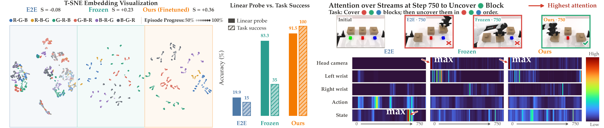
| Training | t-SNE silhouette S | Linear probe (%) | Task success (%) |
|---|---|---|---|
| E2E | −0.08 | 19.9 | 15 |
| Frozen bootstrapped memory | +0.23 | 83.3 | 35 |
| Ours (finetuned) | +0.36 | 91.5 | 100 |
Training-recipe ablations and results across three VLA backbones.
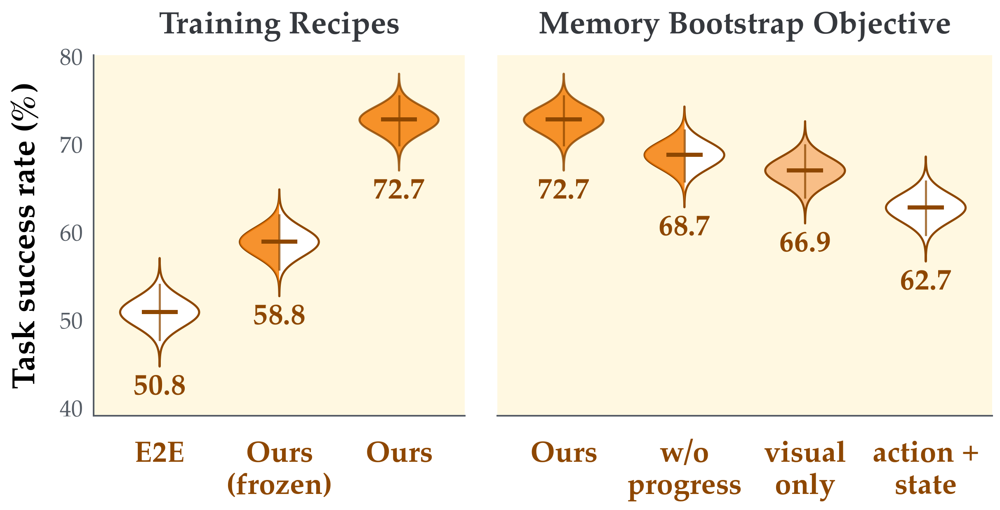
| Task | Recipe: E2E | Recipe: Ours (frozen) | Recipe: Ours | Objective: Ours | Objective: Without progress | Objective: Visual only | Objective: Action + state |
|---|---|---|---|---|---|---|---|
| Obs. / Pick | 12 | 7 | 9 | 9 | 6 | 6 | 5 |
| Rearrange | 90 | 99 | 100 | 100 | 91 | 78 | 100 |
| Put Back | 100 | 100 | 100 | 100 | 100 | 100 | 100 |
| Swap Blocks | 90 | 99 | 100 | 100 | 90 | 89 | 89 |
| Swap T | 45 | 99 | 100 | 100 | 97 | 99 | 98 |
| Battery | 27 | 20 | 41 | 41 | 35 | 30 | 36 |
| Ranking | 73 | 68 | 83 | 83 | 73 | 85 | 61 |
| Cover | 15 | 35 | 100 | 100 | 100 | 100 | 52 |
| Press | 5 | 2 | 21 | 21 | 26 | 15 | 23 |
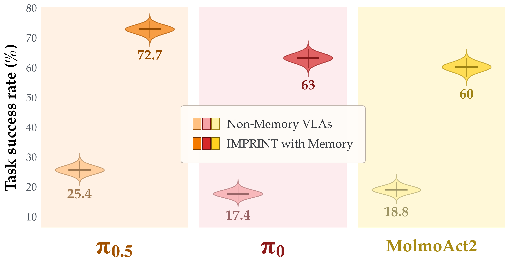
| Task | π0.5: No memory | π0.5: With memory | π0: No memory | π0: With memory | MolmoAct2: No memory | MolmoAct2: With memory |
|---|---|---|---|---|---|---|
| Obs. / Pick | 8 | 9 | 8 | 6 | 4 | 4 |
| Rearrange | 63 | 100 | 13 | 99 | 52 | 100 |
| Put Back | 20 | 100 | 49 | 100 | 0 | 100 |
| Swap Blocks | 16 | 100 | 4 | 100 | 11 | 65 |
| Swap T | 8 | 100 | 0 | 98 | 15 | 100 |
| Battery | 30 | 41 | 27 | 30 | 7 | 5 |
| Ranking | 65.6 | 83 | 54 | 56 | 62 | 74 |
| Cover | 15 | 100 | 0 | 78 | 18 | 83 |
| Press | 3 | 21 | 2 | 0 | 0 | 6 |